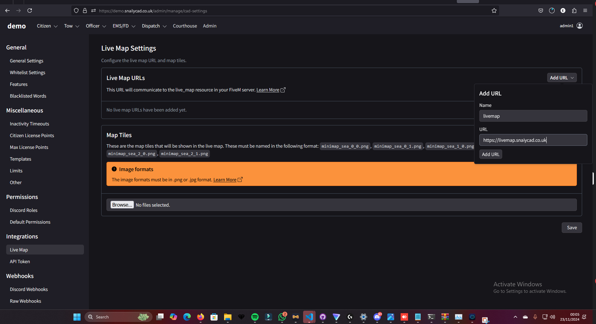
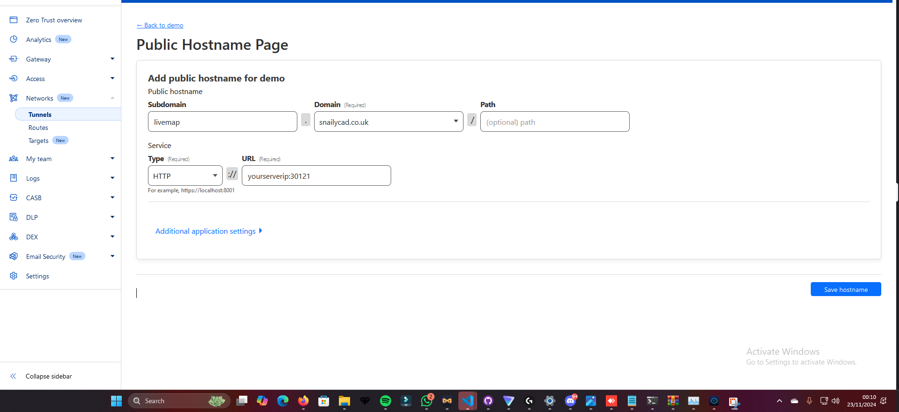

Setup Instructions
Follow this guide to set up a live map for your FiveM server with SnailyCAD on Swift Peak Hosting.
Step 1: Configure a Public Hostname
- Navigate to the "Tunnels" section in your control panel.
- Set up a public hostname. Use the subdomain livemap and your domain (e.g.,
snailycad.co.uk).
- Set the service type to HTTP.
- Enter the URL pointing to your server’s IP and port (e.g.,
yourserverip:30121).
- Save the hostname configuration.
Step 2: Configure Live Map in SnailyCAD
- Log in to your SnailyCAD admin panel.
- Go to the "Integrations" section and click on "Live Map".
- Click "Add URL" and provide the following:
- Name: livemap
- URL:
https://livemap.snailycad.co.uk
- Click "Add URL" and save your changes.
Step 3: Map Tiles Configuration
- Prepare your map tiles in the required format:
minimap_sea_0_0.png, minimap_sea_0_1.png, etc.
- Ensure the files are in
.png or .jpg format.
- Upload the tiles to SnailyCAD in the "Map Tiles" section under "Live Map Settings".
Screenshots

